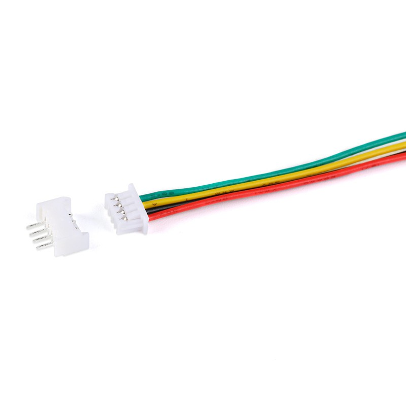
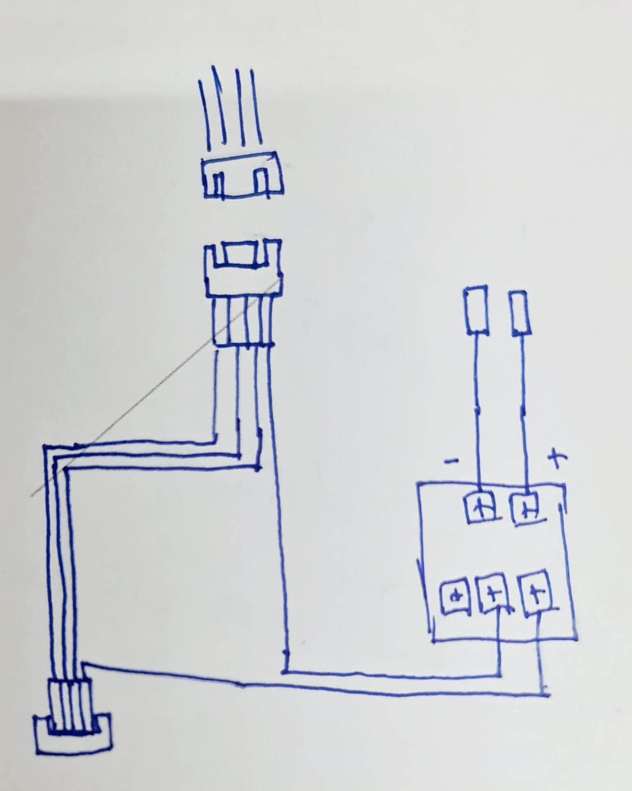

Ewelink Wi-Fi Switch with Energy Meter
Ewelink Wi-Fi Switch with Energy Meter สวิตช์เปิดปิดผ่านแอป พร้อมฟังก์ชั่นวัดการใช้ไฟ (ใช้กับแอป Ewelink)How Setup
1P eWelink Single phase Din rail WIFI Smart Energy Meter Power Consumption kWh Meter wattmeter with
Wall Charger Modify
วิธีดัดแปลงเครื่องชาร์จ BYD (Duosida) ให้ทำงานแบบ Plug and Charge โดยไม่ต้องแตะบัตร RFID
ส่งจากต่างประเทศ
สายแพ
วิธีการประกอบ

สายแพ เมีย-เมีย 7 เส้น
timer relay 12v.

ผังการต่อ
- Micor JST 4 Pin ตัวเมีย ต่อกับ สายแพ เมีย-เมีย 4 เส้น
- สายแพ สีแดง ปลายเปลือย ต่อเข้า COM ของ Timer Relay สายแพอีก 3 เส้น ต่อลงบอร์ดเดิม
- สายแพ สีแดง หัวเปลือย ต่อจาก NC ของ Timer Relay ต่อลงบอร์ดเดิม
- สายแพ สีแดง สีดำ ปลายเปลืออ ต่อเข้า V+, V- ปลายอีกด้าน ต่อลงบอร์ดเดิม ช่อง PL, GD